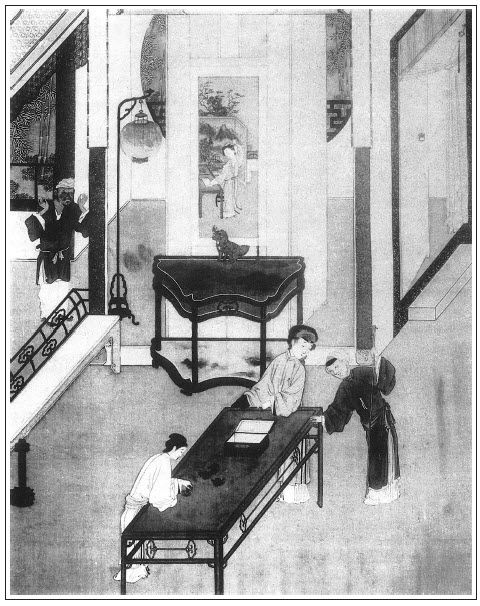

張回看官著眼看他大手筆處，看他一絲不亂處。在於何處？看他止用二人發放一部大題目，一曰「售色」，一曰「盜財」，是其一絲不亂處，是其大筆如椽處。
夫色不可售，而西門之色，亦有所售之也；財不可盜，而西門之財，亦有所盜之也。止用兩筆，將一部作惡的公案，俱已報應分明，不差一線，筆力簡捷如是。一部書，直看到此回，方知李銘之名為可笑。何則？俗語云「裡明不知外暗」。觀其轉財物，方知其命名之意。是故此書無一名不有深意。
夫文章有起有結。看他開手寫十弟兄，今於西門一死，即將十弟兄之案，緊緊接手結完，如伯爵等上祭是也。內除花子虛死，連雲理守八人，一個不少。卻抽出雲理守留至一百回結照二搗鬼，完「熱結冷遇」之案。故此回止以七人結之。再於其中出脫吳典恩另結，卻又止用六人。今添一花子由作七人，是明明冷結子虛。文字參差之妙如此。
於祭文中，卻將西門慶作此道現身，蓋言如此鳥人，豈成個人也，而作如此鳥人之幫閒。又何如乎？至於梵僧現身之文，實為此文遇了那樣鳥人，做此鳥事，以致喪此鳥殘生也。
王六兒上祭，蓋為拐財遠遁之引，莫認月娘吃醋。
又借罵王六兒，將桂姐、銀姐隨手抹過。後一影月兒，以王三官與桂姐同結，蓋又結林氏，又借張二官，將伯爵、李三、黃四一齊結住。總之，第一回東拉西扯而出，此回卻又風馳電卷而去，真是千古文章能事。
觀三日演《殺狗記》，固知予言不謬。
寫月娘燒瓶兒之靈，分其人而吞其財，將平素一段奸險隱忍之心，一齊發出，真是千古第一惡婦人。我生生世世不願見此人者，蓋以此也。
寫月娘與李鴇相爭，真是棋逢對手。作者何惡月娘之深。而丑之以不堪也。
補寫蔡御史，總為西門之交遊放聲一哭。接寫一伯爵，更不堪也。蓋十弟兄，惟伯爵更密些，故寫一伯爵，以例眾人。
詩曰：
倚醉無端尋舊約，卻因惆悵轉難勝。
靜中樓閣深春雨，遠處簾櫳半夜燈。
抱柱立時風細細，繞廊行處思騰騰。
分明窗下聞裁剪，敲遍欄杆喚不應。

話說西門慶死了，首七那日，卻是報恩寺十六眾僧人做水陸。張夾報恩，乃「孝」字也。孝哥出見，首七固應是他做。這應伯爵約會了謝希大、花子由、祝實念、孫天化、常峙節、白賚光七人，坐在一處，張夾撇開雲理守為官，花子虛已死，吳典恩作驛丞。伯爵先開口說：「大官人沒了，今一七光景。你我相交一場，當時也曾吃過他的，也曾用過他的，也曾使過他的，也曾借過他的。今日他死了，莫非推不知道？繡旁可憐。張夾「推不知道」，妙絕，「莫非」二字更妙。灑土也瞇瞇後人眼睛兒，張夾數語為此二字。他就到五閻王跟前，也不饒你我。繡眉此時猶及閻王，終墜勢力惡趣，可見入者不知出也。張夾此二句猶是謊言，若怕閻王猶是好人也。如今這等計較，你我各出一錢銀子，七人共湊上七錢，辦一桌祭禮，買一幅軸子，再求水先生作一篇祭文，抬了去，張夾水加一點為冰，用水先生作文，蓋冰冷也。自與葵軒冷熱不同。大官人靈前祭奠祭奠，少不的還討了他七分銀子一條孝絹來，張夾算到此，方肯如此。這個好不好？」眾人都道：「哥說的是。」當下每人湊出銀子來，交與伯爵，整備祭物停當，買了軸子，央水秀才做了祭文。這水秀才平昔知道應伯爵這起人，與西門慶乃小人之朋，於是暗含譏刺，作就一篇祭文。伯爵眾人把祭祀抬到靈前擺下，陳敬濟穿孝在旁還禮。伯爵為首，各人上了香，人人都粗俗，那裡曉得其中滋味。澆了奠酒，只顧把祝文宣念。其文略曰：
維重和元年，歲戊戌，二月戊子期，越初三日庚寅，侍教生張夾三字當如此用。應伯爵、謝希大、花子由、祝實念、孫天化、常峙節、白賚光，謹以清酌庶饈之儀，致祭於故錦衣西門大官人之靈曰：
維靈生前鯁直，秉性堅剛；軟的不怕，硬的不降。張夾是鳥性情。常濟人以點水，恆助人以精光。張夾是鳥作為。囊篋頗厚，氣概軒昂。張夾狡猾之極，罵盡假麒麟。逢樂而舉，遇陰伏降。張夾狡猾之極，罵盡懼內者。錦襠隊中居住，齊腰庫裡收藏。張夾狡猾之極，罵盡紈褲。作者命意，本言西門為一「鳥人」而已，未必有此。而予亦何敢借此罵人？但覺其詞義雙關，偶寫出以為一笑也。若以予為借諷有意，則吾豈敢！有八角而不用撓摑，逢虱蟣而騷癢難當。張夾伯爵輩，所為蟣虱也。受恩小子，常在胯下隨幫。也曾在章台而宿柳，也曾在謝館而猖狂。正宜撐頭活腦，久戰熬場，張夾世之恃勇鬥狠，死而無悔者，視此文當何如？胡為罹一疾不起之殃？見今你便長伸著腳子去了，丟下小子輩，如班鳩跌腳，倚靠何方？難上他煙花之寨，難靠他八字紅牆。張夾妙妙。再不得同席而偎軟玉，再不得並馬而傍溫香。撇的人垂頭落腳，張夾四字是鳥幫閒。閃的人牢溫郎當。張夾四字是鳥幫閒。今特奠茲白濁，張夾是鳥供養。次獻寸觴。張夾是鳥杯斝。靈其不昧，來格來歆。尚享。繡眉祭文大屬可笑，惟其可笑，故存之。張夾方了鳥身一段公案。作者視元惡大奸，直曰一鳥而已。其才度相越為何如？吾故批玉樓視天下無難處之事也。
眾人祭畢，陳敬濟下來還禮，請去捲棚內三湯五割，管待出門不題。
且說那日院中李家虔婆，聽見西門慶死了，鋪謀定計，繡旁伏。備了一張祭桌，使了李桂卿、李桂姐坐轎子來上紙弔問。月娘不出來，都是李嬌兒、孟玉樓在上房管待。李家桂卿、桂姐悄悄對李嬌兒說：「俺媽說，人已是死了，你我院中人，守不的這樣貞節！自古千里長棚，沒個不散的筵席。教你手裡有東西，悄悄教李銘稍了家去防後。你還恁傻！常言道：『揚州雖好，不是久戀之家。』不拘多少時，也少不的離他家門。」那李嬌兒聽記在心。
不想那日韓道國妻王六兒，亦備了張祭桌，喬素打扮，坐轎子來與西門慶燒紙。在靈前擺下祭祀，只顧站著。站了半日，白沒個人兒出來陪待。原來西門慶死了，首七時分，就把王經打發家去不用了。張夾月娘險而狠。小廝每見王六兒來，都不敢進去說。那來安兒不知就裡，到月娘房裡，向月娘說：「韓大嬸來與爹上紙，在前邊站了一日了，大舅使我來對娘說。」這吳月娘心中還氣忿不過，便喝罵道：「怪賊奴才，不與我走，還來甚麼韓大嬸、𣭈大嬸，賊狗攮的養漢淫婦，把人家弄的家敗人亡，父南子北，夫逃妻散的，還來上甚麼𣭈紙！」一頓罵的來安兒摸門不著，來到靈前。吳大舅問道：「對後邊說了不曾？」來安兒把嘴谷都著不言語。問了半日，才說：「娘稍出四馬兒來了。」這吳大舅連忙進去，對月娘說：「姐姐，你怎麼這等的？快休要舒口！自古人惡禮不惡。他男子漢領著咱偌多的本錢，你如何這等待人？好名兒難得，快休如此。你就不出去，教二姐姐、三姐姐好好待他出去，也是一般。做甚麼恁樣的，教人說你不是。」那月娘見他哥這樣說，才不言語了。良久，張夾又是良久，可想。孟玉樓出來，還了禮，陪他在靈前坐的。只吃一鍾茶，婦人也有些省口，就坐不住，隨即告辭起身去了。張夾為拐財安根。見雖是道國有心，亦是月娘待人不忠厚之報。月娘真刺毒人哉。正是：
誰人汲得西江水，難免今朝一面羞。
那李桂卿、桂姐、吳銀兒都在上房坐著，見月娘罵韓道國老婆淫婦長、淫婦短，砍一株損百枝，兩個就有些坐不住，未到日落，就要家去。張夾隨手收拾。月娘再三留他姐兒兩個：「晚夕夥計每伴宿，你每看了提偶，明日去罷。」留了半日，桂姐、銀姐不去了，只打發他姐姐桂卿家去了。到了晚夕，僧人散了，果然有許多街坊、夥計、主管，喬大戶、吳大舅、吳二舅、沈姨父、花子由、應伯爵、謝希大、常峙節，張夾會中三人，帶子由為四人。也有二十餘人，叫了一起偶戲，在大卷棚內，擺設酒席伴宿。提演的是「孫榮、孫華殺狗勸夫」戲文。張夾予言繼《殺狗記》而作，此處可見。蓋特為「熱結」文字一結。堂客都在靈旁廳內，圍著幃屏，放下簾來，擺放桌席，朝外觀看。李銘、吳惠在這裡答應，晚夕也不家去了。不一時，眾人都到齊了。祭祀已畢，卷棚內點起燭來，安席坐下，打動鼓樂，戲文上來。直搬演到三更天氣，戲文方了。
原來陳敬濟自從西門慶死後，無一日不和潘金蓮兩個嘲戲，或在靈前溜眼，帳子後調笑。張夾絕妙行樂之地。於是趕人散一亂，眾堂客都往後邊去了，小廝每都收家活，這金蓮趕眼錯，捏了敬濟一把，說道：「我兒，你娘今日成就了你罷。趁大姐在後邊，咱就往你屋裡去罷。」敬濟聽了，得不的一聲，先往屋裡開門去了。婦人黑影裡，抽身鑽入他房內，更不答話，張夾婦人不答話也。解開褲子，張夾婦人解開褲子也。仰臥在炕上，繡旁急得妙。雙鳧飛肩，叫陳敬濟奸耍。張夾婦人叫也。
正是：
色膽如天怕甚事，鴛幃雲雨百年情。
真個是：
二載相逢，一朝配偶；數年姻眷，一旦和諧。一個柳腰款擺，一個玉莖忙舒。耳邊訴雨意雲情，枕上說山盟海誓。鶯恣蝶采，婍妮搏弄百千般；狂雨羞雲，嬌媚施逞千萬態。一個不住叫親親，一個摟抱呼達達。得多少柳色乍翻新樣綠，花容不減舊時紅。
霎時雲雨了畢，婦人恐怕人來，連忙出房，往後邊去了。到次日，這小伙兒嘗著這個甜頭兒，早辰走到金蓮房來，張夾金蓮敬濟二人事，自此特出筆敘之，此為始也。金蓮還在被窩裡未起來。從窗眼裡張看，見婦人被擁紅雲，粉腮印玉，說道：「好管庫房的，這咱還不起來！今日喬親家爹來上祭，大娘分付把昨日擺的李三、黃四家那祭桌收進來罷。你快些起來，且拿鑰匙出來與我。」婦人連忙教春梅拿鑰匙與敬濟，敬濟先教春梅樓上開門去了。婦人便從窗眼裡遞出舌頭，兩個咂了一回。正是：
得多少脂香滿口涎空咽，甜唾融心溢肺肝。
有詞為證：
恨杜鵑聲透珠簾。心似針簽，情似膠粘。我則見笑臉腮窩愁粉黛，瘦損春纖。寶髻亂，雲松翠鈿。睡顏酡，玉減紅添。檀口曾沾。到如今唇上猶香，想起來口內猶甜。張夾以上寫品玉之詞屢屢矣，此又寫一咂舌，作者之才真千伶百俐。
良久，春梅樓上開了門，敬濟往前邊看搬祭祀去了。不一時，喬大戶家祭來擺下。喬大戶娘子並喬大戶許多親眷，靈前祭畢。吳大舅、吳二舅、甘夥計陪侍，請至卷棚內管待。李銘、吳惠彈唱。那日鄭愛月兒家也來上紙弔孝。張夾月兒後來，是與桂姐不同道者。月娘俱令玉樓打發了孝裙束腰，後邊與堂客一同坐的。鄭愛月兒看見李桂姐、吳銀姐都在這裡，便嗔他兩個不對他說：「我若知道爹沒了，有個不來的！你每好人兒，就不會我會兒去。」又見月娘生了孩兒，說道：「娘一喜一憂。惜乎爹只是去世太早了些兒，你老人家有了主兒，也不愁。」月娘俱打發了孝，留坐至晚方散。
到二月初三日，西門慶二七，玉皇廟吳道官十六眾道士，在家唸經做法事。那日衙門中何千戶作創，約會了劉、薛二內相，周守備、荊都統、張團練、雲指揮等數員武官，合著上了壇祭。張夾此西門每日門外上祭送殯之遺也。月娘這裡請了喬大戶、吳大舅、應伯爵來陪侍，李銘、吳惠兩個小優兒彈唱，卷棚管待去了。俱不必細說。到晚夕唸經送亡。月娘分付把李瓶兒靈床連影抬出去，一把火燒了。將箱籠都搬到上房內堆放。張夾久矣想其如此，今日方遂其意。奶子如意兒並迎春收在後邊答應，張夾又遂其意。把繡春與了李嬌兒房內使喚。張夾又遂其意。將李瓶兒那邊房門，一把鎖鎖了。張夾可憐。
正是：
畫棟雕樑猶未干，堂前不見癡心客。張夾寫月娘真二十分狠，二十分險。
有詩為證：
襄王台下水悠悠，一種相思兩樣愁。
月色不知人事改，夜深還到粉牆頭。
那時李銘張夾然則外暗也。日日假以孝堂助忙，暗暗教李嬌兒偷轉東西與他掖送到家，又來答應，常兩三夜不往家去，只瞞過月娘一人眼目。吳二舅又和李嬌兒舊有首尾，誰敢道個不字。張夾月娘可殺。初九日念了三七經，月娘出了暗房，四七就沒曾唸經。十二日，陳敬濟破了土回來。二十日早發引，也有許多冥器紙札，送殯之人張夾「也有」二字可歎。終不似李瓶兒那時稠密。臨棺材出門，也請了報恩寺朗僧官起棺，坐在轎上，捧的高高的，念了幾句偈文。念畢，陳敬濟摔破紙盆，棺材起身，閤家大小孝眷放聲號哭。吳月娘坐魂轎，後面坐堂客上轎，都圍隨材走，逕出南門外五里原祖塋安厝。陳敬濟備了一疋尺頭，請雲指揮點了神主，陰陽徐先生下了葬。眾孝眷掩土畢。張夾一路寫來，諸事與瓶兒一點不差，而彼熱此冷，真可痛哭。山頭祭桌，可憐通不上幾家，張夾逼真。只是吳大舅、喬大戶、何千戶、沈姨夫、韓姨夫與眾夥計五六處而已。吳道官還留下十二眾道童回靈，安於上房明間正寢。張夾西門一生，吳道實終始之，蓋言「無道」二字盡之也。陰陽灑掃已畢，打發眾親戚出門。吳月娘等不免伴夫靈守孝。一日暖了墓回來，答應班上排軍節級，各都告辭回衙門去了。張夾去。西門慶五七，月娘請了薛姑子、王姑子、大師父、十二眾尼僧，在家誦經禮懺，超度夫主生天。張夾來了。吳大妗子並吳舜臣媳婦，都在家中相伴。
原來出殯之時，李桂卿同桂姐在山頭，悄悄對李嬌兒如此這般：「媽說，你摸量你手中沒甚細軟東西，不消只顧在他家了。你又沒兒女，守甚麼？教你一場嚷亂，登開了罷。繡旁可恨。昨日應二哥來說，張夾是他說。如今大街坊張二官府，要破五百兩金銀，娶你做二房娘子，當家理紀。你那裡便圖出身，你在這裡守到老死，也不怎麼。你我院中人家，棄舊迎新為本，趨炎附勢為強，不可錯過了時光。」這李嬌兒聽記在心，過了西門慶五七之後，因風吹火，用力不多。不想潘金蓮對孫雪娥說，出殯那日，在墳上看見李嬌兒與吳二舅在花園小房內，兩個說話來。春梅孝堂中又親眼看見李嬌兒帳子後遞了一包東西與李銘，張夾一對仇人，偏是他二人，妙。塞在腰裡，轉了家去。繡眉此是欲嫁者不傳之秘，然究竟同出一揆。嚷的月娘知道，把吳二舅罵了一頓，趕去鋪子裡做買賣，再不許進後邊來。張夾已恨金蓮矣。分付門上平安，不許李銘來往。這花娘惱羞變成怒，正尋不著這個由頭兒哩。一日因月娘在上房和大妗子喫茶，請孟玉樓，不請他，就惱了，與月娘兩個大鬧大嚷，拍著西門慶靈床子，啼啼哭哭，叫叫嚎嚎，到半夜三更，在房中要行上吊。張夾買花者看樣。丫頭來報與月娘。月娘慌了，與大妗子計議，請將李家虔婆來，要打發他歸院。虔婆生怕留下他衣服頭面，說了幾句言語：「我家人在你這裡做小伏低，頂缸受氣，好容易就開交了罷！須得幾十兩遮羞錢。」繡眉已入其局，而猶不足，虔婆溪壑無底，可恨。吳大舅居著官，又不敢張主，張夾大舅如此。相講了半日，教月娘把他房中衣服、首飾、箱籠、床帳、家活盡與他，打發出門。只不與他元宵、繡春兩個丫頭去。李嬌兒生死要這兩個丫頭。月娘生死不與他，說道：「你倒好，買良為娼。」一句慌了鴇子，就不敢開言，變做笑吟吟臉兒，張夾月娘同鴇子稱對手也。拜辭了月娘，李嬌兒坐轎子，抬的往家去了。
看官聽說，院中唱的，以賣俏為活計，將脂粉作生涯；早辰張風流，晚夕李浪子；前門進老子，後門接兒子；棄舊憐新，見錢眼開，自然之理。饒君千般貼戀，萬種牢籠，還鎖不住他心猿意馬。不是活時偷食抹嘴，就是死後嚷鬧離門。不拘幾時，還吃舊鍋粥去了。
正是：
蛇入筒中曲性在，鳥出籠輕便飛騰。
有詩為證：
堪笑煙花不久長，洞房夜夜換新郎。
兩隻玉腕千人枕，一點朱唇萬客嘗。
造就百般嬌艷態，生成一片假心腸。
饒君總有牢籠計，難保臨時思故鄉。
月娘打發李嬌兒出門，大哭了一場。眾人都在旁解勸，潘金蓮道：「姐姐，罷，休煩惱了。常言道，娶淫婦，養海青，食水不到想海東。張夾金蓮此時暢極語。這個都是他當初干的營生，今日教大姐姐這等惹氣。」
家中正亂著，忽有平安來報：「巡鹽蔡老爹來了，在廳上坐著哩，我說家老爹沒了。他問沒了幾時了，我回正月二十一日病故，到今過了五七。他問有靈沒靈，我回有靈，在後邊供養著哩。他要來靈前拜拜，我來對娘說。」月娘分付：「教你姐夫出去見他。」不一時，陳敬濟穿上孝衣出去，拜見了蔡御史。良久，後邊收拾停當，請蔡御史進來西門慶靈前參拜了。月娘穿著一身重孝，出來回禮，張夾月娘可笑。再不交一言，就讓月娘說：「夫人請回房。」又向敬濟說道：「我昔時曾在府相擾，今差滿回京去，敬來拜謝拜謝，不期作了故人。」便問：「甚麼病症？」陳敬濟道：「是痰火之疾。」蔡御史道：「可傷，可傷。」即喚家人上來，取出兩疋杭州絹，一雙絨襪，四尾白鯗，四罐蜜餞，說道：「這些微禮，權作奠儀罷。」張夾傷心事，寫來不堪回首。又拿出五十兩一封銀子來，「這個是我向日曾貸過老先生些厚惠，今積了些俸資奉償，以全終始之交。」繡眉知罃無後，而豫讓為之死，千古義之。如蔡生於西門，古道相處，必竟讀書人，與眾不同。張夾為諸人一襯，傷心之甚。分付平安道：「大官，交進房去。」敬濟道：「老爹忒多計較了。」月娘說：「請老爹前廳坐。」蔡御史道：「也不消坐了。拿茶來，吃了一鍾就是了。」左右須臾拿茶上來。蔡御史吃了，揚長起身上轎去了。月娘得了這五十兩銀子，心中又是那歡喜，又是那慘戚。張夾千古傷心，在此二句。想有他在時，似這樣官員來到，肯空放去了？又不知吃酒到多咱晚。今日他伸著腳子，空有傢俬，眼看著就無人陪待。正是：
人得交遊是風月，天開圖畫即江山。
話說李嬌兒到家，應伯爵打聽得知，報與張二官知，就拿著五兩銀子來，請他歇了一夜。原來張二官小西門慶一歲，屬兔的，三十二歲了。李嬌兒三十四歲，虔婆瞞了六歲，只說二十八歲，教伯爵瞞著。使了三百兩銀子，娶到家中，做了二房娘子。祝實念、孫寡嘴依舊領著王三官兒，還來李家行走，與桂姐打熱，不在話下。繡眉爭氣一場，此時安在？可悲，可涕。張夾結了桂兒，干父親娘總成虛幻。
伯爵、李三、黃四借了徐內相五千兩銀子，張二官出了五千兩，做了東平府古器這批錢糧，逐日寶鞍大馬，在院內搖擺。張二官見西門慶死了，又打點了上千兩金銀，往東京尋了樞密院鄭皇親人情，對堂上朱太尉說，要討提刑所西門慶這個缺。家中收拾買花園，蓋房子。應伯爵無日不在他那邊趨奉，把西門慶家中大小之事，盡告訴與他，繡眉吾安得抽魚腸，斷若人之舌而碎其首。說：「他家中還有第五個娘子潘金蓮，排行六姐，生的上畫兒般標緻，詩詞歌賦，諸子百家，拆牌道字，雙陸象棋，無不通曉。又寫的一筆好字，彈的一手好琵琶。今年不上三十歲，比唱的還喬。」張夾果然正是不堪。說的那張二官心中火動，巴不的就要了他，便問道：「莫非是當初賣炊餅的武大郎那老婆麼？」伯爵道：「就是他。占來家中，今也有五六年光景，不知他嫁人不嫁。」張二官道：「累你打聽著，待有嫁人的聲口，你來對我說，等我娶了罷。」伯爵道：「我身子裡有個人，在他家做家人，名來爵兒。等我對他說，若有出嫁聲口，就來報你知道。難得你娶過他這個人來家，也強似娶個唱的。當時西門慶大官人在時，為娶他，不知費了許多心。大抵物各有主，也說不的，只好有福的匹配，你如有了這般勢耀，不得此女貌，同享榮華，枉自有許多富貴。我只叫來爵兒密密打聽，但有嫁人的風縫兒，憑我甜言美語，打動春心，你卻用幾百兩銀子，娶到家中，盡你受用便了。」張夾以伯爵結十弟兄。看官聽說，但凡世上幫閒子弟，極是勢利小人。當初西門慶待應伯爵如膠似漆，賽過同胞弟兄，張夾一筆結玉皇廟「熱」字。那一日不吃他的，穿他的，受用他的。身死未幾，骨肉尚熱，便做出許多不義之事。繡眉此輩心腸易知，但迷者不覺耳。
正是：
畫虎畫皮難畫骨，知人知面不知心。
有詩為證：
昔年意氣似金蘭，百計趨奉不等閒。
自從西門身死後，紛紛謀妾伴人眠。
文回文禹門云：西門慶在日，內而妻妾，外而親朋，只是一個假字。西門慶死後，當年之假心腸，全行收起，此日之真面目，露出原形。此一回先結李嬌兒，次寫應伯爵，但其間情罪，卻有分別。
李嬌兒本門戶中人，其當時之娶，錯在西門慶，而今日之嫁，錯不盡在李嬌兒。外則有老鴇子、桂卿、桂姐之招，內則有潘六兒、春梅、二舅之逐，雖欲再留，亦不可得，蓋有不能不然者也，其情罪尚輕。
若應伯爵此等人，而親之近之，手足交之，心腹托之，其錯亦在西門慶，所謂種瓜得瓜，種豆得豆，種荊棘得刺也。獨怪應伯爵，本為酒食而脅肩，原因財物而諂笑，此小人之常也。如果所求不遂，所願未償，反而噬臍，轉為翻臉，此猶小人之常也，均不足為怪。若西門慶之待伯爵，糊其口，果其腹，飽暖其身，安頓其家，亦可謂至矣盡矣。不知感恩，亦何至負義；不知報德，亦何至成仇！今觀送上李嬌兒，又謀及潘金蓮，直若與西門慶義不同生，仇結隔世者，此非小人之常，實小人之變矣。世上焉有此等人乎？或者祝（念實）〔實念〕、孫寡嘴之所為，尚有因由，豈其伯爵之所說哉？果如是，其罪孽深重，當於李嬌兒罪上加三等，亦不足蔽辜也。雖然，昔日之假，何嘗是假，今日之真，又豈是真乎？真形一現，假意又萌矣。張二官你要小心著。